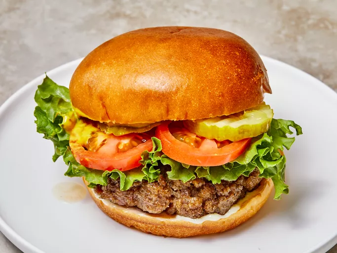

Juiciest Hamburgers Ever

This aptly named hamburger recipe uses evaporated milk, eggs, and bread crumbs to create incredibly juicy and
flavorful hamburger patties that will rival your favorite burger joint.
ordered list
- 2 pounds ground beef
- ¾ cup dry bread crumbs
- 3 tablespoons evaporated milk
- 1 egg, beaten
- 2 tablespoons Worcestershire sauce
- ⅛ teaspoon cayenne pepper
- 2 cloves garlic, minced
- Gather all ingredients. Preheat an outdoor grill for high heat and lightly oil the grill grate.
- Combine ground beef, bread crumbs, evaporated milk, egg, Worcestershire sauce, cayenne pepper, and garlic in
a large bowl using your hands.
- Form mixture into 8 patties.
- Cook patties on the preheated grill until browned and no longer pink, about 5 minutes per side. Serve hot
and enjoy!